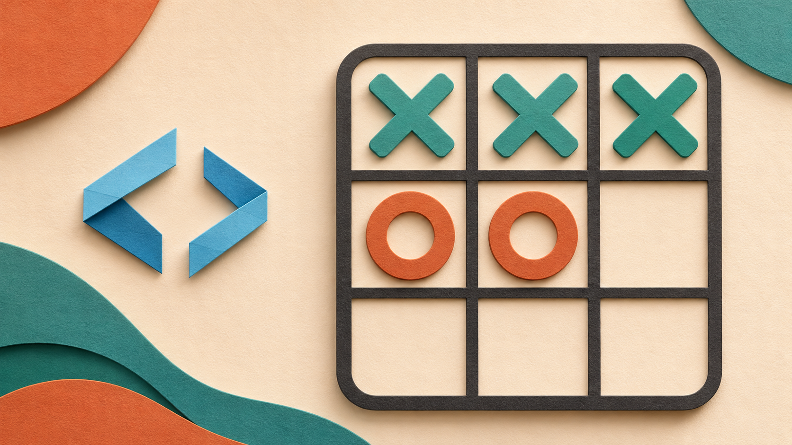
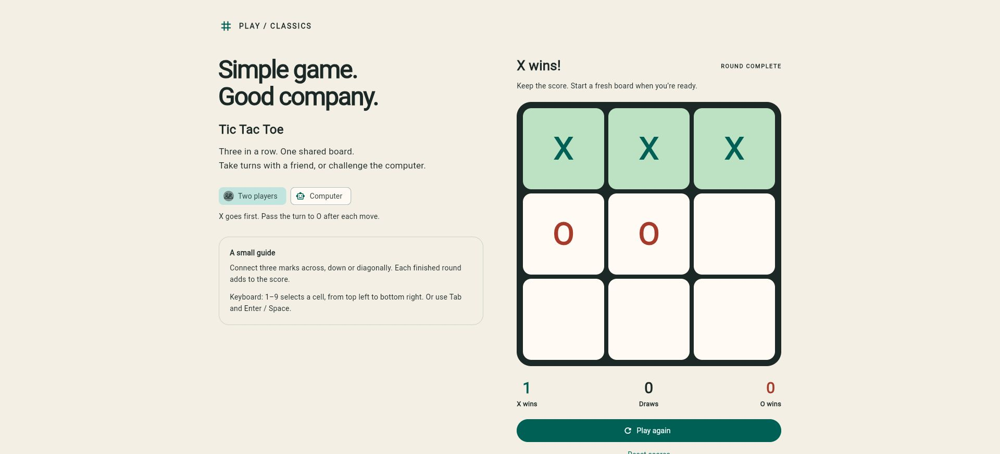
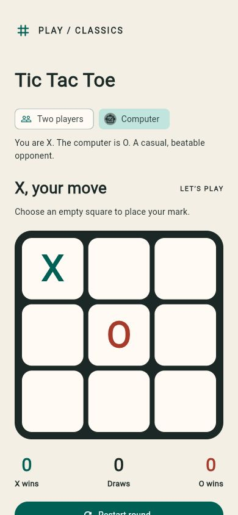

Ilustração conceitual criada para esta aula com geração de imagem por IA. As capturas de tela adiante mostram o aplicativo real.
Um jogo pequeno é um ótimo laboratório para aprender a separar regras, estado e interface. Nesta aula, vamos explorar um jogo da velha funcional, entender por que uma jogada é aceita ou recusada e verificar esse comportamento com testes. A implementação foi atualizada em novembro de 2026; o material original de 2020 permanece preservado no histórico do repositório.
Ao concluir, você deverá conseguir representar um tabuleiro sem depender do Flutter, reconhecer vitória e empate, proteger o estado contra jogadas inválidas, conectar as regras à interface e distinguir reiniciar uma rodada de zerar o placar. O resultado funciona com duas pessoas no mesmo dispositivo e oferece um adversário simples para praticar sozinho.

Captura real no Chrome: vitória de X, linha destacada e placar da sessão. O resultado permanece visível até iniciar outra rodada.
A base desta revisão é Flutter 3.50.0, com Dart 3.14.0. A versão do Flutter está fixada em .fvmrc e no CI. Confira flutter --version antes de começar. O projeto usa null safety e exige Dart ≥3.14.0 e Flutter ≥3.50.0. Use uma cópia local desse SDK ou FVM; não é necessário atualizar o SDK de outros projetos.
Abra o terminal e execute os comandos abaixo. Para estudar esta aula, clone o projeto completo: os trechos seguintes explicam partes reais dos arquivos e não substituem todos os arquivos de plataforma e interface.
git clone https://github.com/kleberandrade/tic-tac-toe-flutter.git cd tic-tac-toe-flutter flutter --version flutter pub get --enforce-lockfile flutter run -d chrome
Não há cadastro, Firebase, chave de API ou dados pessoais de exemplo. Para testar uma vitória local, selecione Two players e pressione 1, 4, 2, 5, 3. X deve completar a primeira linha. Use Play again para limpar o tabuleiro mantendo X com uma vitória.
As dependências diretas atuais são o SDK Flutter, material_ui 1.11.1, flutter_test do mesmo SDK e flutter_lints 6.0.0. O arquivo pubspec.lock registra as versões exatas. A extração do Material para o pacote oficial exige importar package:material_ui/material_ui.dart; o import antigo package:flutter/material.dart está depreciado nesta versão do Flutter. Não basta atualizar o número do SDK e ignorar o aviso.
name: tictactoe
description: An accessible Flutter tic-tac-toe classroom app with local and computer play.
publish_to: none
version: 2.0.0+2
environment:
sdk: '>=3.14.0 <4.0.0'
flutter: '>=3.50.0'
dependencies:
flutter:
sdk: flutter
material_ui: ^1.11.1
dev_dependencies:
flutter_test:
sdk: flutter
flutter_lints: ^6.0.0
flutter:
uses-material-design: true
A auditoria consulta todos os pacotes hospedados do lockfile no pub.dev. Entre os transitivos atualizados estão clock 1.1.3, matcher 0.12.20, meta 1.19.0, stack_trace 1.12.2 e vector_math 2.4.4. material_ui também resolve cupertino_ui 1.1.7 e intl 0.20.3. flutter_lints resolve lints 6.1.0. A lista completa, com versão resolvida e mais recente, está em docs/medium/dependency-audit.json no repositório.
Duas exceções precisam ficar explícitas: Flutter 3.50.0 fixa material_color_utilities em 0.13.0, embora o registro ofereça 0.13.1; flutter_test fixa test_api em 0.7.14, embora exista 0.7.15. Essas dependências não foram forçadas por dependency_overrides nem tiveram o SDK alterado. Todas as demais versões hospedadas são comparadas ao registro. Atualizar com segurança significa respeitar também os contratos do SDK, e não apenas produzir um lockfile com números maiores.
Para futuras revisões, use flutter pub outdated, confira o changelog das dependências diretas, execute flutter pub upgrade --major-versions e repita os testes. flutter_lints 6.0.0 já é a versão estável mais recente verificada nesta revisão. Os plugins custom_splash e share citados na aula antiga não são dependências deste aplicativo.
O tabuleiro tem nove casas. X começa; depois de cada jogada válida, o turno muda para O ou X. Uma casa ocupada não pode receber outra marca. A rodada termina quando uma das oito linhas está completa ou quando as nove casas estão ocupadas sem vencedor. Depois do término, nenhuma nova jogada pode modificar o tabuleiro ou pontuar novamente.
Vamos usar índices de 0 a 8 no domínio. A interface aceita teclas de 1 a 9, na mesma ordem visual. Evite misturar o índice interno com o número apresentado ao jogador:
Domínio: Teclado: 0 1 2 1 2 3 3 4 5 4 5 6 6 7 8 7 8 9
O enum Mark restringe as marcas a X e O. Uma casa vazia contém null. O objeto Game guarda o estado e oferece operações pequenas. O tabuleiro exposto é uma cópia não modificável: a interface pode consultar as casas, mas só play pode aceitar uma jogada. Isso evita alterar a lista por fora e esquecer de verificar vitória ou atualizar o placar.
O arquivo lib/domain/game.dart abaixo não importa Flutter. Observe a ordem em play: validar a coordenada, rejeitar estado indisponível, registrar a marca, verificar a linha, pontuar o desfecho e só então trocar o turno quando a rodada continuar. Uma coordenada fora da faixa gera RangeError; uma casa indisponível retorna false sem alterar o estado.
/// The only marks on a tic-tac-toe board. X always opens a round.
enum Mark {
x,
o;
Mark get other => this == x ? o : x;
String get label => name.toUpperCase();
}
const _lines = [
[0, 1, 2],
[3, 4, 5],
[6, 7, 8],
[0, 3, 6],
[1, 4, 7],
[2, 5, 8],
[0, 4, 8],
[2, 4, 6],
];
/// A round and its session score. No Flutter, timers, network or persistence.
class Game {
final List<Mark?> _cells = List.filled(9, null);
final Map<Mark, int> _wins = {Mark.x: 0, Mark.o: 0};
Mark _turn = Mark.x;
Mark? _winner;
List<int> _winningCells = const [];
int _draws = 0;
List<Mark?> get cells => List.unmodifiable(_cells);
Mark get turn => _turn;
Mark? get winner => _winner;
List<int> get winningCells => List.unmodifiable(_winningCells);
int get draws => _draws;
int wins(Mark mark) => _wins[mark]!;
bool get isDraw => _winner == null && !_cells.contains(null);
bool get isOver => _winner != null || isDraw;
/// Invalid coordinates are programmer errors; unavailable moves are rejected.
bool play(int index) {
RangeError.checkValidIndex(index, _cells);
if (isOver || _cells[index] != null) return false;
_cells[index] = _turn;
_winningCells = _lineFor(_turn);
if (_winningCells.isNotEmpty) {
_winner = _turn;
_wins[_turn] = wins(_turn) + 1;
} else if (isDraw) {
_draws++;
} else {
_turn = _turn.other;
}
return true;
}
List<int> _lineFor(Mark mark) {
for (final line in _lines) {
if (line.every((i) => _cells[i] == mark)) return line;
}
return const [];
}
void nextRound() {
_cells.fillRange(0, 9, null);
_turn = Mark.x;
_winner = null;
_winningCells = const [];
}
void resetScores() {
_wins.updateAll((_, _) => 0);
_draws = 0;
nextRound();
}
/// A deterministic, casual opponent: win, block, center, then first free cell.
/// It is deliberately beatable, not a minimax or random opponent.
int? computerMove() {
if (isOver) return null;
for (final mark in [_turn, _turn.other]) {
for (final line in _lines) {
final empty = line.where((i) => _cells[i] == null).toList();
if (empty.length == 1 &&
line.where((i) => _cells[i] == mark).length == 2) {
return empty.single;
}
}
}
if (_cells[4] == null) return 4;
return _cells.indexOf(null);
}
}
A lista _lines contém três linhas, três colunas e duas diagonais. _lineFor percorre essas combinações e usa every para conferir se todas as três casas têm a marca. Em uma vitória, _winningCells permite destacar a linha sem colocar cores no domínio. A decisão sobre a cor continua pertencendo à interface.
Também há duas escalas de tempo: uma rodada é um tabuleiro; uma sessão é o placar acumulado. nextRound limpa apenas a rodada. resetScores zera vitórias e empates e começa outra rodada. X inicia novamente. Os números ficam somente em memória: fechar/recarregar o aplicativo ou mudar o modo reinicia a sessão.
A aplicação tem três arquivos principais: lib/domain/game.dart reúne regras e placar; lib/pages/game_page.dart apresenta e recebe ações; lib/main.dart configura a aplicação e o tema. O estado de uma partida pertence à sua página, sem singleton ou variáveis globais mutáveis. Para este escopo, setState é suficiente.
A entrada e o tema usam o pacote Material atual. Este é o conteúdo de lib/main.dart:
import 'package:material_ui/material_ui.dart';
import 'pages/game_page.dart';
void main() => runApp(const MyApp());
class MyApp extends StatelessWidget {
const MyApp({super.key});
@override
Widget build(BuildContext context) => MaterialApp(
debugShowCheckedModeBanner: false,
title: 'Tic Tac Toe',
theme: ThemeData(
useMaterial3: true,
colorScheme: ColorScheme.fromSeed(
seedColor: const Color(0xFF146B60),
surface: const Color(0xFFFFFCF5),
),
scaffoldBackgroundColor: const Color(0xFFF4F1E8),
textTheme: ThemeData.light().textTheme.apply(
bodyColor: const Color(0xFF202D2B),
displayColor: const Color(0xFF202D2B),
),
filledButtonTheme: FilledButtonThemeData(
style: FilledButton.styleFrom(minimumSize: const Size(48, 52)),
),
),
home: const GamePage(),
);
}
Em GamePage, o manipulador abaixo encaminha a entrada ao domínio. A jogada do computador só acontece quando a jogada humana foi aceita, a rodada continua e é o turno de O. A verificação evita respostas após uma vitória e impede que clicar em casa ocupada gere outra jogada do computador.
void _play(int index) {
setState(() {
if (!_game.play(index)) return;
if (_computer && !_game.isOver && _game.turn == Mark.o) {
final reply = _game.computerMove();
if (reply != null) _game.play(reply);
}
});
}
O adversário é propositalmente simples e pode ser vencido: tenta completar uma linha, bloqueia uma ameaça imediata, escolhe o centro e depois a primeira casa livre. Não é Minimax e não usa sorteio. O código antigo usava nextInt(list.length - 1), que excluía a última opção e falhava quando sobrava uma única casa. Nesta versão, computerMove retorna null quando a rodada terminou, e a última casa livre continua sendo uma opção válida.

Captura real no navegador em largura de celular. Modo de jogo, instrução de turno e tabuleiro usam uma coluna com rolagem. Isto não é um teste em telefone físico.
A interface exibe turno, vitória ou empate sem obrigar o jogador a fechar um diálogo. A linha vencedora fica destacada e todas as casas são bloqueadas após o fim. Restart round / Play again mantém o placar; Reset scores o zera. Trocar entre Two players e Computer começa outra sessão. Selecionar novamente o modo ativo não apaga o resultado.
Acessibilidade não se resume a cor. Cada casa informa linha, coluna e conteúdo; o resultado possui região semântica de anúncio; há foco visível e botões reais. Use Tab com Enter/Espaço ou teclas 1–9. O layout foi testado com largura de 320 pixels e texto a 200%. A descrição do estado continua compreensível sem distinguir o verde do vermelho. Uma sessão com leitor de tela ainda precisa de validação humana específica.
Um teste útil descreve uma situação que o jogador perceberia. O exemplo abaixo pode entrar em test/game_example_test.dart. Ele comprova a vitória e o bloqueio da próxima jogada; não depende de detalhes de layout.
import 'package:flutter_test/flutter_test.dart';
import 'package:tictactoe/domain/game.dart';
void main() {
test('X vence e a rodada deixa de aceitar jogadas', () {
final game = Game();
for (final cell in [0, 3, 1, 4, 2]) {
expect(game.play(cell), isTrue);
}
expect(game.winner, Mark.x);
expect(game.winningCells, [0, 1, 2]);
expect(game.wins(Mark.x), 1);
expect(game.play(8), isFalse);
expect(game.wins(Mark.x), 1);
});
}
A suíte do repositório testa as oito linhas para X e O, empate, alternância, coordenadas inválidas, casas ocupadas, lista protegida, bloqueio após o fim, reinício, placar e decisões do computador. Os testes de widgets incluem toques, teclado, modo de jogo, resultado visível e texto ampliado. Para um empate manual em Two players, reinicie e use 1, 2, 3, 5, 4, 6, 8, 7, 9.
dart format --output=none --set-exit-if-changed lib test tool flutter analyze --fatal-infos flutter test --coverage dart run tool/rules_example.dart flutter build web --no-wasm-dry-run
O exemplo de terminal exercita apenas o domínio. O build Web vai para build/web e deve ser servido por HTTP para conferir a versão de produção. O CI executa instalação com lockfile, formatação, análise, exemplo, testes e build. Consulte o README e docs/WORK_LOG.md para os resultados efetivamente observados e os limites nativos; não confunda compilação com teste físico. Android depende do SDK/JDK e das licenças aceitas pelo responsável. O projeto iOS exige iOS 15 ou superior.
Código completo: github.com/kleberandrade/tic-tac-toe-flutter. Autor: Kleber de Oliveira Andrade; licença MIT preservada. A edição de 2020 e seus links didáticos permanecem em docs/original-project.md e no histórico Git, sem apresentar screenshots antigos como se fossem a versão atual.
Para aprofundar: testes no Flutter, null safety no Dart e a referência original sobre Minimax, do The Coding Train. Cada material mantém sua autoria; o algoritmo não foi incorporado a este projeto.